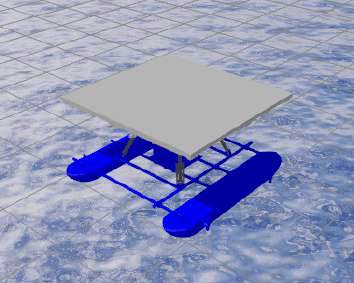
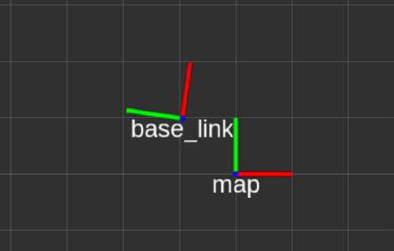
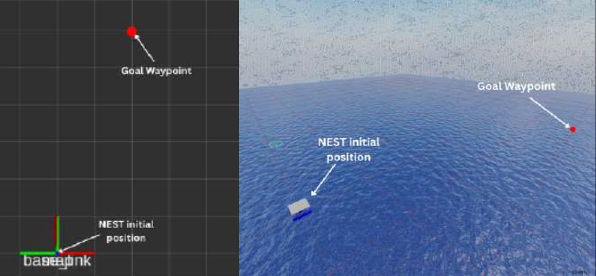
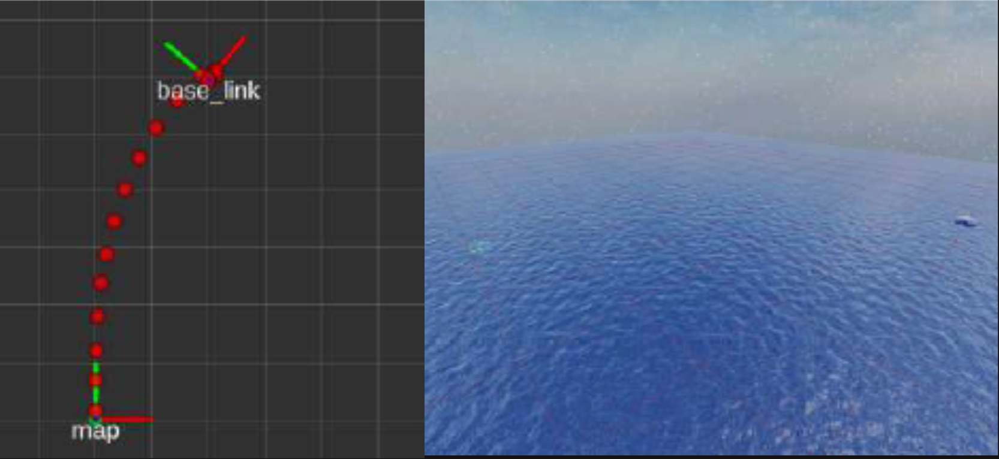
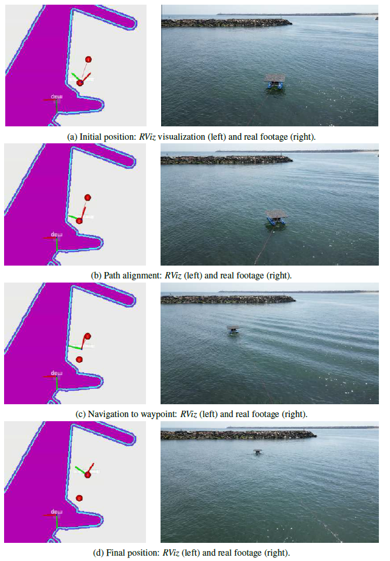
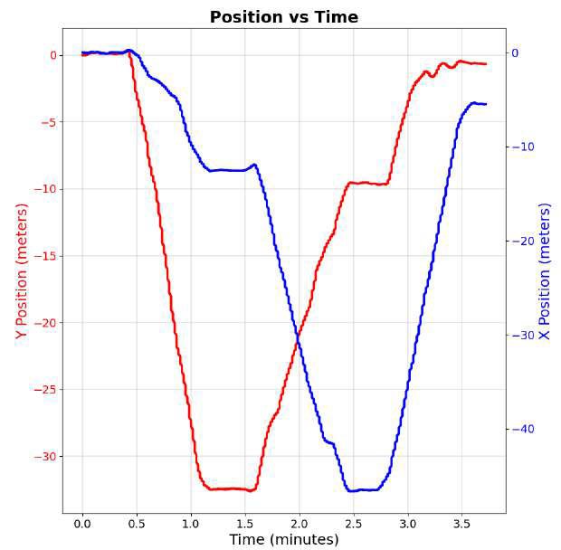

Project Overview
The NEST (Non-stationary Emersed Structure for Takeoff-landing) is a novel catamaran-style Unmanned Surface Vehicle (USV) custom-engineered to serve as a mobile launch and recovery platform for Unmanned Aerial Vehicles (UAVs). Designed to operate autonomously in maritime environments, it acts as a floating base station that provides essential transportation, power, and communication infrastructure to support extended aerial operations.
Built with a highly stable dual-hull configuration, the NEST USV features an integrated 2x2 meter landing pad capable of supporting precise UAV landings even under challenging aquatic conditions. Its holonomic vectorial drive system enables advanced maneuverability and active position-holding, which are critical for executing safe and reliable UAV deployment and retrieval procedures at sea.

Technical Specifications
| Characteristics | Specifications |
|---|---|
| Dimensions | 2.0 m × 2.0 m × 1.3 m |
| Total weight | ~100 kg |
| Available payload | ~200 kg |
| Drive mode | Vectorial drive |
| Max speed | 1.5 m/s |
| On-board sensors | Navigation: GPS, IMU, Compass. Perception: 3D LiDAR, visual and thermal cameras |
| Power supply | LiFePO4 25.6 V @ 200 Ah |
| Power consumption / Operation time | ~3300 W / ~2 h |
Hardware Architecture
The NEST USV utilizes a modular design, distinctly separating the power and electronic subsystems.
- Power Module: Housed in an IP67-rated Peli Air case, it includes a 24V battery, a power switch, a fuse for over-current protection, and a charging port.
- Electronics Module: Located in an IP67 Fibox enclosure, this module integrates an onboard computer, a CubeOrange flight controller, and sensors including GPS, IMUs, a compass, and a LiDAR sensor.
- Actuation & Firmware: The flight controller runs a modified version of ArduSub firmware adapted to support a vectored thruster configuration. This enables holonomic navigation, which is essential for position holding during UAV takeoff and landing.

Software Architecture & Autonomous Navigation
The navigation architecture is built around the ROS2 nav2 framework to autonomously manage task allocation, waypoint routing, and obstacle avoidance.

- Localization & Sensor Fusion: An Extended Kalman Filter (EKF) merges GPS, IMU, and compass data to maintain robust pose estimation. The system seamlessly maps ArduSub's standard North-East-Down (NED) coordinate frames to the East-North-Up (ENU) framework used by ROS2.
- Costmap Generation & Path Planning: The workspace is modeled using an occupancy grid converted into a costmap with spatial decay inflation layers to provide safety margins around static obstacles. The global planner uses artificial potential fields (navigation functions) to calculate an optimal, local-minima-free route.
- Velocity Control: A modified Pure Pursuit algorithm tracks the planned path using an adaptive lookahead mechanism to determine desired velocities, enhanced by two-stage filtering for smooth motion and acceleration limits.
- Local Planner (AVOA): The Adaptive Velocity Obstacle Avoidance (AVOA) algorithm operates in real-time to avoid dynamic obstacles by restricting dangerous velocity space within predefined time-window constraints.
- Thrust Control: A decoupled PID architecture independently translates linear and angular velocity targets into corresponding physical thrust forces, utilizing gain scheduling for low speeds and anti-windup protection.
Results
SITL Simulation
The system was validated in Gazebo using a Software-In-The-Loop (SITL) setup, where simulated sensors interfaced directly with the ArduSub autopilot. An ocean dynamics plugin was integrated to model buoyancy and vehicle interaction with the environment. Frame transformations were verified in RViz to support localization debugging.


Simulated Navigation
The platform successfully executed autonomous waypoint navigation, generating global paths and translating them into thrust commands. In simulation, the vehicle covered 63.2 m in ~60 s, reaching an average velocity of 1.05 m/s.


Real-World Validation
Field tests at the ATLANTIS Test Center validated system performance under environmental disturbances. The vehicle covered 40 m in 49 s, with an average speed of 0.82 m/s.
Position hold performance showed high stability, with GPS variation around 40 cm, enabling reliable UAV takeoff and landing operations. The graph bellow illustrates the position hold performance, during the time intervals ~[1.3 , 1.5] minutes and ~[2.5 , 2.7] minutes.

Comparison between simulated and real-world navigation.
